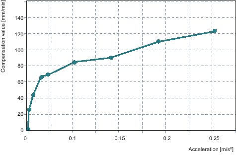
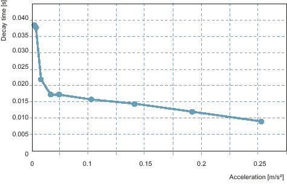

The machine data for activating the friction compensation is set for the Y axis:
MD32490 = 3
MD32510 = 1
The Y axis is measured with the following settings:
Radius 5 mm in SD55820 $SCS_FRICT_OPT_RADIUS
Feedrates in SD55822[n] $SCS_FRICT_OPT_FEED
The active time is not adapted.
Step 1 of 8: 700 mm/min | Amplitude: 68.696 mm/min Decay time: 0.017 s |
Step 2 of 8: 560 mm/min | Amplitude: 66.240 mm/min Decay time: 0.017 s |
Step 3 of 8: 350 mm/min | Amplitude: 43.330 mm/min Decay time: 0.021 s |
Step 4 of 8: 140 mm/min | Amplitude: 23.848 mm/min Decay time: 0.038 s |
Step 5 of 8: 1060 mm/min | Amplitude: 84.688 mm/min Decay time: 0.015 s |
Step 6 of 8: 1410 mm/min | Amplitude: 90.018 mm/min Decay time: 0.014 s |
Step 7 of 8: 1770 mm/min | Amplitude: 109.839 mm/min Decay time: 0.012 s |
Step 8 of 8: 2120 mm/min | Amplitude: 123.012 mm/min Decay time: 0.009 s |
The following characteristics show the amplitude and the decay time for different acceleration levels:
|  | |
|  |
See also:
Friction compensation - automatic tuning
Data list
Axis selection and status display